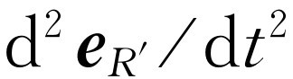

第34章 辐射中的相对论性效应
§34-1 运动辐射源
本章将叙述与辐射有关的各种效应，从而结束关于光传播的经典理论的讨论。我们对光的分析已相当深入而详尽。唯一未加讨论的与电磁辐射有关的重要现象是，当无线电波被四周具有反射壁的盒子（盒子的线度与波长差不多）所包围时，或当它沿着一个长的管道传输时所发生的现象，即所谓谐振腔 现象和波导 现象。这些现象我们将在以后讨论；我们先用另一种物理现象——声——作为例子来进行讨论，然后再回到这个题目上来。除此以外，本章是我们最后一次考虑光的经典理论。
我们可以把现在要讨论的效应概括为与运动辐射源 有关的效应。因此，我们不再假设辐射源局限在某固定点附近以比较低的速率运动。
我们记得，电动力学的基本定律表明，在远离运动电荷的地方，电场由下式给出
单位矢量 的方向指向电荷的表观方向，它的二阶微商是电场的决定因素，当从电荷到观察者的信号仅以有限速率c 传播时，此单位矢量当然并不指向电荷现在 的位置，而指向电荷看起来所在的位置。
与电场相联系的还有磁场，方向始终与电场垂直，也与源的表观方向垂直，而由下式给出
至此我们只考虑了运动速率为非相对论性的情况，结果在源所在的方向上没有明显的运动要去考虑。现在我们要更一般地研究以任意速度而运动的情况，看一看在这种情况下会有什么其他效应发生。虽然我们假设运动速率是任意的，但是当然仍将假定探测器离源很远。
由第28章的讨论已经知道，在 中唯一要算的是 的方向 的变化。设电荷的坐标是（x ，y ，z ），z 沿着观察方向（图34-1）。在给定时刻，比如时刻τ ，位置的三个分量是x （τ ），y （τ ）和z （τ ）。距离R 很接近等于R （τ ）=R 0 +z （τ ）。这样，矢量 的方向主要取决于x 和y ，而几乎根本与z 无关，因为单位矢量的横向分量是x /R 与y /R ，当对这些分量求微商时，在分母上得到R 2 之类的量
所以，当离源足够远时，需要考虑的项只有x 和y 的变化。将因子R 0 提出微商号外，于是得到
式中R 0 大体上是到电荷q 的距离；不妨取R 0 为观察者到坐标系（x ，y ，z ）原点的距离OP 。于是电场就是一个常量乘以一个很简单的量，即x 坐标与y 坐标的二阶微商（本来可以更数学化一些，把x 与y 叫做电荷的位置矢量 r 的横向 分量，但这样并不会使问题更清楚多少）。
当然，我们认识到坐标必须在推迟时刻度量。这里我们发现z （τ ）要 影响推迟。推迟时间是多少？若观察时刻叫做t （即P 处的时刻），则与之对应的在A 处的时刻τ 并不是t ，而是要延迟一段时间，这段时间即光必需走过的总距离除以光的速率。在一级近似下，此延迟为R 0 /c ，为一常量（此项我们不感兴趣），但在二级近似下，必须包括电荷于时刻τ 在z 方向所在位置所产生的效应，因为如果q 稍微移后一些，推迟就得稍微多一些。这是我们以前所忽略的效应，也正是为了使结果对所有运动速率都成立唯一需要考虑的效应。
现在我们要做的是选定某一t 值，由它计算τ 的值，从而求出该时刻τ 的x 值与y 值。这些就是推迟的x 和y ，我们称之为x′ 和y′ ，它们的二次微商决定了场。这样，τ 由下列公式决定
和
x′ （t ）=x （τ ），y′ （t ）=y （τ ）.（34.4）
这些方程很复杂，但很容易用几何图形来描述它们的解。这样的图使我们对事情是如何进行的过程有一个很好的定性的感性认识，但对一个复杂的问题要导出精确的结果，则仍需要应用详细的数学方法。
§34-2 求“表观”运动
上述方程有一种有趣的简化形式。若我们忽略不感兴趣的延迟常量R 0 /c （这仅仅意味着时间t 的原点改变一个常量），上述方程即可化为
ct =cτ +z （τ ），x ′=x （τ ），y′ =y （τ ）.（34.5）
现在我们要求出x ′和y′ 作为t 的函数，而不是作为τ 的函数，我们可以用下述方法来求：方程式（34.5）表明，我们应取实际的运动再加上一个常数（光速）与τ 的乘积，这句话所表达的意思如图34-2所示。画出电荷的实际运动（如图中左边所示），并想象在电荷运动的同时它又以速率c 从P 点被拉走（这只是数学上加cτ 的一种表述，并不存在相对论性收缩之类的问题）。用这个方法得到一种新的运动，其中沿视线的坐标是ct ，如图右边所示（图中表示对平面内相当复杂的运动所得的结果，但运动当然可以不在一个平面内——它可以比平面运动更复杂）。主要之点是现在水平方向（即视线方向）的距离不再是原来的z ，而是z +cτ ，因而就是ct 。这样，我们就得到了x ′（和y ′）与t 关系的曲线图！为了求电场，只要看一下这条曲线的加速度，也就是只要对它微分二次就行了。所以最后的回答是：为了求运动电荷的电场，先画电荷的运动，然后将该运动以速率c逐点向后平移，以便“将它展开”；这样画出来的曲线，就是位置x′ 和y ′作为t 的函数的曲线。此曲线的加速度给出作为时间t 的函数的电场。如果我们愿意，也可这样来想象，即整个“刚性”曲线以速率c 通过视平面向前运动，从而曲线与视平面的交点坐标就是x ′和y ′。由该点的加速度得出电场。这个解正与起初的公式一样确切——它只是一种几何表述方法。
图34-2 由方程式（34.5）求x′ （t ）的几何解法
如果运动比较慢，例如是一个正在作上、下缓慢运动的振子，那么，当将该运动以光速展开时，显然会得到一条简单的余弦曲线，这样就给出了我们一直看到的公式，它给出振荡电荷所产生的场。但更有意思的例子是电子快速（很接近于光速）沿圆周运动。如果在圆平面内观察，则推迟的x ′（t ）如图34-3所示。这是一条什么曲线？设想有一条从圆心到电荷的矢径，将它穿过电荷稍微延长一些，如果电荷运动得很快，只要稍微延长一点，使延长线到达以光速旋转的圆周上就行。于是，当我们将电荷运动以光速向后逐点平移时，整个过程就相当于一个带有电荷的轮子以光速无滑动地向后滚动；这样电荷在空间就画出一条曲线，它很接近于摆线——称为内摆线 。如果电荷以很接近于光速的速率运动，曲线的“尖点”的确很尖；如果电荷恰好以光速运动，它们将成为无限尖的真正的尖点。“无限尖”很有意思；它意味着在尖点附近二阶微商非常大。电荷每走一圈就得到一个电场的尖脉冲。这是从非相对论性运动根本得不到的结果，在电荷作非相对论性运动时，每走一圈得到一次振动，此振动在所有时刻的“强度”大致相同。而现在，电场每隔T 0 时间出现一个尖脉冲，这里T 0 是电荷转动的周期。这些强电场在沿着电荷运动方向的一个狭窄锥角内发射。当电荷离开P 点运动时，曲线的曲率很小，这时沿P 的方向只有很小的辐射电场。
图34-3 以恒定速率v =0.94c 沿圆周运动的质点的x ′（t ）曲线
§34-3 同步辐射
在同步加速器中有沿着圆形轨道运动的高速电子；它们以很接近于光速的速率运动，因此有可能以实际的光 的形式观察到上述辐射。我们来更详细地讨论这一问题。
在同步加速器中，电子在均匀磁场中沿圆形轨道运动。首先我们来看一下电子为什么沿圆周运动。根据式（12.10），在磁场中运动的粒子所受的力由下式给出
F =q v × B ，（34.6）
此力与场和速度都垂直。像通常一样，力等于动量对时间的变化率。如果场的方向由纸面向上，则粒子的动量和作用在粒子上的力如图34-4所示。既然力与速度垂直，则粒子的动能，进而其速率，保持不变 。磁场的作用只是改变运动的方向 。在一个短时间Δt 内，动量矢量的改变量Δ p = F Δt 在其垂直方向上，因而 P 转过一个角度Δθ =Δp /p =qvB Δt /p ，因为|F |=qvB 。但在同一时间内，粒子走过距离Δs =v Δt 。显然，直线AB 和CD 将在某一点O 相交，而使OA =OC =R ，其中R 满足Δs =R Δθ 。将此关系与前一个表示式相结合，可得R Δθ /Δt =Rω =v =qvBR /p ，由此可得
p =qBR （34.7）
和
因为同样的论证也适用于下一瞬时，再下一瞬时，等等，故可得出结论，粒子必然作沿半径为R 的圆周 运动，角速度为ω 。
粒子的动量等于电荷乘以半径再乘以磁场这一结果十分重要，并且用得很多。此关系在实用上很重要，因为当存在一些带相同电荷的基本粒子时，可在磁场中对它们进行观察，测得它们的轨道的曲率半径，在已知磁场的情况下，就可决定粒子的动量。若在式（34.7）两边同乘以c ，并将q 用电子电荷表示，就可以用电子伏 为单位来量度粒子的动量值。使用这些单位，该式变为
pc （eV）=3×108 （q /q e ）BR ，（34.9）
式中B ，R 及光速皆用mks制表示，在mks制中，光速的数值为3×108 。
磁场的mks制单位叫做韦伯每平方米 （Wb·m-2 ）。磁场还有一个较老的但仍常用的单位，叫做高斯 （Gs）。1 Wb·m-2 等于104 Gs。为了给读者一个磁场大小的概念，我们指出通常在铁中能达到的最强的磁场约为1.5×104 Gs；超过此值，使用铁的优越性就没有了。目前，绕有超导体导线的电磁体可以产生105 Gs以上强度的稳定磁场，此强度在mks单位制中即为10 mks单位。赤道处的地磁场约为十分之几高斯。
回到式（34.9），我们可以设想同步加速器中的粒子以吉电子伏量级的能量运行，对1 GeV，pc 为109 （我们将很快回过来讲能量）。那么，若B 相当于10 000 Gs，即1 mks单位（这是很强的磁场），则R 应为3.3 m。加利福尼亚理工学院的同步加速器的实际半径是3.7 m，磁场也稍强一些，能量是1.5 GeV，但属于同一数量级。这样，我们对于同步加速器为什么具有这种尺寸就有体会了。
我们已计算了粒子的动量，但我们知道粒子的总能量，包括静能在内，由
给出，对于电子，与mc 2 相应的静能为0.511×106 eV，当pc 为109 eV时，可略去mc 2 ，故对所有实用目的来说，当粒子速率达到相对论性速率时，W =pc 。说电子能量为1 GeV与说电子动量乘以c 为1 GeV实际上相同。若W =109 eV，很容易证明粒子的速率与光速之差只有八百万分之一！
现在我们再回到这样的粒子所发出的辐射上来。粒子在半径为3.3 m，即周长为20 m的圆周上运动，绕行一周的时间约等于光走20 m所需的时间。故这样的粒子所应辐射的波长将为20 m——处在无线电短波范围。但由于刚才讨论过的堆积效应（图34-3），以及使矢径端点达到光速c所需的延长量只有半径的八百万分之一，因而内摆线的尖点与相邻两尖点之间的距离比较起来，显得非常尖。故加速度（它包含对时间的二次微商）两次得到“压缩因子”8×106 ，因为在尖点附近时间标度两次缩短8×106 倍。于是可以预期有效波长要短得多，即短到20 m的（1/64）×10-12 的程度，相当于X射线区域。（实际上，尖点本身并不是全部决定因素；必须把尖点附近的一定区域包括进去。这使因子变为3/2次方，而不是平方，但波长仍在比可见光区短的区域内。）因此，尽管缓慢运动的电子会辐射波长为20 m的无线电波，而相对论性效应却使波长缩短到使我们能看见 它！显然，光应是偏振的 ，其电场方向垂直于均匀磁场。
为了进一步领会所观察到的现象，假设将这种光（由于这些脉冲的时间间隔很大，为了简单起见，我们将只取一个脉冲）投射在衍射光栅上，这种光栅就是许多条散射线。当这个脉冲自光栅射出后，我们将看到什么（如果我们果真看见光，就应看见红光、蓝光，等等）？脉冲迎面打在光栅上，光栅上的所有振子都强烈地向上运动，然后再向下运动，而且只是上、下运动一次。于是这些振子就在各个方向上产生效应，如图34-5所示。但P 点离光栅的一端比离另一端近一些，所以来自A 线的电场先到达P 点，其次是来自B 线的到达，等等；最后到达的是来自最后一条线的脉冲。简言之，来自所有相继的光栅线的反射的总和如图34-6（a）所示；这是一个由一系列脉冲所组成的电场，它很像一个波长等于脉冲间距的正弦波，正像单色光打在光栅上所发生的现象一样！因而，我们确实得到了彩色的光。但是，应用同样的论证，我们会从任何一种“脉冲”得不到光吗？会的。若曲线很平坦，则我们将把所有彼此相隔很短时间间隔的散射波相加在一起［图34-6（b）］。从而可见，场根本不振动，而是一条很平坦的曲线，因为在两个脉冲之间的时间间隔内，每个脉冲的变化不大。
图34-5 单个尖脉冲光打在光栅上，沿各不同方向散射为不同颜色的光
图34-6 由一系列（a）尖脉冲和（b）平坦脉冲所造成的总电场
由在磁场中循环运行的相对论性带电粒子所发出的电磁辐射叫做同步辐射 。它之所以这样命名，理由很明显，但这种辐射并不只限于同步加速器，甚至也不限于地球上的实验室。令人兴奋而有趣的是，它也发生在自然界中！
§34-4 宇宙中的同步辐射
在公元1054年，中国和日本的文明在世界上处于领先地位；他们知道地球以外的宇宙万物，并在那一年十分卓越地记录了一颗发生爆炸的亮星（奇怪的是那些写下了中世纪全部著作的欧洲僧侣们，竟然没有一个费心记下天空中一颗星的爆炸）。今天我们可以拍摄那颗星的照片，其形状如图34-7所示。星的外缘是一大片红色纤维状丝，这是稀薄气体原子按其固有频率“鸣叫”所产生的；它造成不同频率的明亮线光谱。这里出现的红色是氮造成的。另一方面，星的中心部分则是一块神秘而模糊的光斑，其频率是连续分布的，这就是说，不存在与特定原子相联系的特殊频率。但这并不是被邻近的星体所“照亮”的尘埃（这是得到连续光谱的一种可能途径）。我们透过它可以看见别的星体，所以它是透明的，但它却发射 光。
在图34-8中我们看到的是同一个星体，所用的是不含明亮光谱线的光谱区中的光，所以我们只看到中心区。但这时望远镜前仍放有偏振片，两幅照片对应的偏振方向相差90°。我们看到两幅图像是不同的！这就是说，光是偏振的。其原因大概是有一个局部的磁场，以及有许多高能电子在该磁场中旋转着。
图34-8 通过蓝滤色片和偏振片所拍摄的蟹状星云照片
（a）电场方向竖直；（b）电场方向水平
我们刚才已经说明电子在磁场中怎么会沿圆周运动的。当然我们还可以在磁场方向上加上任何匀速运动，因为力q v × B 没有沿该方向的分量，而且我们已讲过，同步辐射显然是偏振的，其方向垂直于磁场在视平面内的投影。
把这两个事实结合在一起，可知在一幅照片上明亮而在另一幅照片上黑暗的那些区域，其光的电场方向必定沿一个方向完全偏振。这就意味着存在着一个与该方向相垂直的磁场；而在另一幅照片上有强烈辐射的那些区域，其磁场方向必定有另一种取向。如果仔细观察图34-8，会注意到图上大致有一组“线”，在一幅照片上沿一种走向，在另一幅照片上则沿着与之垂直的走向。照片显示出一种纤维状结构。推测起来，大概磁场力线想尽量沿本身的方向扩展伸长，于是就有了长长的磁场区域，在这种区域内所有电子以一种方式作螺旋运动，而在另一个区域，磁场沿另一个方向，电子也以另一种方式作螺旋运动。
是什么东西使电子在这么长时间内维持这么高的能量？要知道，自从这颗星爆炸以来已经过了900年——它们怎么能始终运动得这么快？电子是怎么保持其能量的，以及整个过程是怎样进行的，至今仍没有彻底弄明白。
§34-5 轫致辐射
接着我们来简短地叙述一下辐射能量的高速运动粒子的另一个有趣的效应。这个概念与刚才所讨论的现象十分相似。假定在一块物体中有带电粒子，并设有一高速电子通过物质（图34-9）。于是，由于原子核周围的电场对电子有拉力作用，电子被加速，使电子的运动曲线有一个小的扭折或弯曲。若电子以十分接近于光速的速率运动，则沿c 方向将产生怎样的电场？请记住我们的规则：将实际运动以速率c 向后平移，从而得到一条曲线，此曲线的曲率量度电场。电子正以速率v 朝着我们运动，所以我们得到一个朝后的运动，但整个图形的横向尺寸按c -v 与c 的比例缩小。所以，若（1-v /c ）≪1，在B ′点就有一个变化很快和很尖的曲率，当取二次微商时就在运动方向上得到一个很强的电场。所以，当高能电子通过物质时，它们沿前进方向发出辐射。这种现象叫做轫致辐射 。实际上，同步加速器用作产生高能电子，没有用作产生高能光子——γ 射线——的多（如果我们真的能够较方便地从加速器中取出电子的话，我们就不这么说了），只要让高能电子通过固体钨“靶”，即可由上述轫致辐射效应辐射光子。
§34-6 多普勒效应

图34-10 运动振子的x-z 与x -t ′曲线
接着我们继续讨论有关运动源的效应的另外一些例子。假设源是一个静止原子，它正以某一固有频率ω 0 振荡。于是我们知道观察到的光的频率就是ω 0 。现在举另一个例子，有一个类似的振子正以频率ω 1 振荡，同时整个原子即整个振子以速度v沿着趋向观察者的方向运动。显然，实际上在空间的运动状况如图34-10（a）所示。现在我们再来故伎重施，即加上cτ ；这就是说，将整个曲线向后平移，于是发现它的振动如图34-10（b）所示。在给定的时间间隔τ 内，振子将走过距离vτ ，而在x′ 对ct 的图内它走了距离（c -v ）τ 。因而原来在时间间隔Δτ 内发生的频率为ω 1 的所有振荡，现在出现在时间间隔Δτ′ =（1-v /c ）Δτ 内；即它们被压缩在一起，而当此曲线以速率c通过我们身旁时，我们将看到较高频率 的光，恰好高了一个压缩因子（1-v /c ）的倒数。于是得到
当然，我们还可以用其他各种方法来分析此现象。假定原子不是发射正弦波，而是以一定频率ω 1 发射脉冲，嘟，嘟，嘟，嘟，……我们收到的将是什么频率？第一个脉冲到达观察者有一定延迟，但下一个脉冲延迟得要少一些，因为其时原子离观察者更近了一些。于是，“嘟”与“嘟”之间的时间因原子运动而减少了。如果我们分析这种情况的几何图形，可以得到脉冲频率增加了因子1/（1-v /c ）。
那么，当我们取一个固有频率为ω 0 的正常原子，并让它以速率v趋近观察者运动时，其频率是否为ω =ω 0 /（1-v /c ）？不，我们知道得很清楚，由于时间流率的相对论性膨胀，运动原子的固有频率ω 1 与原子静止时量得的不同。这样一来，如果真正的固有频率为ω 0 ，则修正后的固有频率ω 1 将是
于是观察到的频率ω 为
上述情况下观察到的频率移动现象叫做多普勒效应 ；如果物体朝我们运动，它所发射的光就显得偏紫一些，如果它离开我们运动，则显得偏红一些。
现在我们对刚才提到的这个有趣而重要的结果再提供两种推导方法。假设源 固定不动，发射频率为ω 0 的波，而观察者 却以速率v 朝源运动。经过一定时间t 后，观察者将运动到一个新的位置，离t =0时他所在位置的距离为vt 。那么他将看见通过了多少弧度的相位？应为通过任一固定点的弧度值ω 0 t ，加上观察者由于自身运动而扫过的弧度值，即vtk 0 （每米弧度数乘以距离）。所以在时间t 内通过的总弧度值，或者说观察到的频率，应为ω 1 =ω 0 +k 0 v 。我们系从一个静止着的人的观点分析了这一情形；我们想知道从运动着的人看起来情况会怎么样。这里又要考虑到两个观察者的时钟快慢上的差异，这一次这种差异意味着必须把结果除以 。因而，若k 0 为波数，即沿运动方向上每米的弧度数，ω 0 为原来的频率，则运动着的人观察到的频率为
对于光，k 0 =ω 0 /c 。因而，对此特例，上式变为
此式看起来与式（34.12）完全不同！当我们朝源运动时所观察到的频率，与当源朝我们运动时所观察到的频率，两者会不同吗？当然不会！相对论告诉我们这两者必须完全相同 。如果我们对数学相当熟练，就可能会认识到这两个数学表示式的确 完全相同！其实，这两个表示式必定 相同这一点正是有人喜欢用来证明相对论需要时间膨胀的一种方法，因为如果式中没有那些平方根因子，两者就不再相同。
既然我们懂得相对论，让我们再用第三种方法来分析这一现象，这种方法看来似乎更一般一些（其实是一回事，因为这与我们如何 处理问题没有关系）。根据相对论，一个观察者看到的位置与时间跟另一个相对他运动的观察者看到的位置与时间之间有一个关系。我们很早以前（第16章）就写出了这些关系式。这就是洛伦兹变换 及其逆变换 [1]
如果我们站在地面上不动，波的形式就是cos（ωt -kx ）；所有的波节、极大和极小将按此方式变化。但在对同一物理波进行观察的正在运动的观察者看来，情况会怎么样？场为零的所有波节的位置不变（当场为零 时，任何人 测得的场均为零）；这是相对论不变性。所以波的形式对另一个观察者也相同，只是要把它变换到他的参照系中
只要对括号内的项重新整理，即可得
这仍是一个波，一个余弦波，它有确定的频率ω ′，即乘在t ′上的常数，以及某一个另外的常数，即乘在x ′上的k ′。我们把k ′叫做对另一个观察者的波数，即每2π 米所含的波的数目。因此另一个观察者将看见由下式给出的新频率与新波数
 （34.18）
（34.18）
看一下式（34.17），可知它与我们用更具有物理意义的论证得到的式（34.13）相同。
§34-7 ω ，k 四元矢量
式（34.17）和（34.18）所表示的关系很有意义，因为它们指出新频率ω ′是老频率ω 和老波数k 的组合，新波数是老波数和老频率的组合。波数是相位对距离的变化率，频率是相位对时间的变化率，在这些表示式中可以看出与位置和时间的洛伦兹变换有十分相似的地方：如果把ω 设想为t ′，把k 设想为x ′除以c 2 ，则新的ω′ 与t′ 相仿，而新的k ′与x ′/c 2 相仿。这就是说，在洛伦兹变换下 ， ω 和k 的变换关系与t 和x 的变换关系相同 。它们都构成所谓四元矢量 ；当一个量有四个分量，其变换关系与时间和空间一样时，它就是一个四元矢量。至此似乎一切都很圆满，然而还有一个小问题：我们说四元矢量必须有四个分量 ；那么另外两个分量在哪里？我们看到，ω 和k 在一个空间方向上与时间和空间相仿，而不是在所有方向上，所以下一步必须研究光在三维空间的传播问题，而不是只在一维空间，因为我们至今只讨论了光在一维空间的传播。
设有一个坐标系x ，y ，z ，一个波在其中传播，其波前如图34-11所示。波的波长为λ ，但波的运动方向不是正好沿着某一轴的方向。这样一个波的表示式是什么？回答无疑是cos（ωt -ks ），其中k =2π /λ ，而s 是沿着波的运动方向的距离——即空间位置沿运动方向的分量。我们这样来处理：设空间一点的位置矢量是 r ，则s 就是 r · e k ，这里 e k 是运动方向上的单位矢量。这就是说，s 正好是r cos（ r ， e k ），即在运动方向上的距离分量。因此上述波的表示式就是cos（ωt -k e k · r ）。
结果表明定义一个矢量k 是很方便的，叫做波 矢 ，它的大小等于波数2π /λ ，并且指向波的传播方向
k =2π e k /λ =k e k .（34.19）
利用这一矢量，上述波可以写成cos（ωt -k · r ），或写成cos（ωt -k x x -k y y -k z z ）。k 的一个分量，比如说k x ，它的意义是什么？显然，k x 是相位对x 的变化率。参照图34-11可知，当改变x 时，相位跟着改变，正像有一个波沿x 方向传播一样，但其波长较长 。“在x 方向的波长”比自然的真实波长长了角α 的正割这一因子，α 是波的实际传播方向与x 轴的夹角
因此相位对距离的变化率（它正比于λ x 的倒数 ）小了 因子cos α ；这正是k x 变化的大小——它等于k 的大小乘上k 与x 轴夹角的余弦！
这就是我们用来表示三维空间波的波矢的性质。四个量ω ，k x ，k y ，k z 在相对论中像四元矢量一样变换，其中ω 对应于时间，k x ，k y ，k z 则对应于四元矢量中的x ，y ，z 分量。
在以前对于狭义相对论的讨论（第17章）中，我们曾知道有一些与四元矢量构成相对论点积的方法。若把位置矢量记为x μ ，其中 μ 用来表示四个分量（时间和三个空间分量），并把波矢叫做k μ ，其中 μ 也有四个值，时间和三个空间分量，则x μ 与k μ 的点积可写成∑′k μ x μ （见第17章）。此点积是与坐标系无关的不变量；它等于什么？由这种四维点积的定义，它是
∑′kμ x μ =ωt -k x x -k y y -k z z .（34.21）
由对矢量的讨论可知，∑′k μ x μ 在洛伦兹变换下是一个不变量，因为k μ 是一个四元矢量。但此量正好是出现在平面波的余弦符号内的宗量，在洛伦兹变换下它理应 不变。我们不可能有一个使余弦符号内的量改变的公式，因为我们知道当坐标系改变时，波的相位不可能改变。
§34-8 光行差
在推导式（34.17）和（34.18）时，我们曾取 k 刚巧沿运动方向这一简单例子，但无疑也可以把它推广到其他情况。例如，假设有一个光源，从静止的观察者看来，它沿某一方向发出光，但我们跟着地球一起在运动（图34-12）。在我们看来，光来自什么方向？为了求出此方向，我们必须写下k μ 的四个分量，并应用洛伦兹变换。但答案可以用下列论证求得：为了看见来自光源的光，我们必须把望远镜偏过一定角度来对准它。为什么？因为光以速率c 下来，而我们以速率v 向侧向运动，所以望远镜必须朝前倾斜，以便当光下来时可“笔直地”朝下通过镜筒。很容易看出，当竖直距离为ct 时，水平距离为vt ，于是，若设倾角为θ ′，则tanθ′ =v /c 。这个结果多好！的确很好——但还有一点小问题：θ ′不 是望远镜相对地球 所应取的角，因为我们是从“固定”观察者的观点进行分析的，当我们说水平距离是vt 时，在地球上的观察者将得出另一个距离，因为他是用“缩短了的”尺来度量的。由于收缩效应，结果证明
此式相当于
sin θ =v /c .（34.23）
读者试用洛伦兹变换导出这一结果，这对你们将是有益的。
这一望远镜必须倾斜的效应，叫做光行差 ，它已被观察到。我们怎么 能观察到呢？谁能说出某一颗星应该 在哪里？假定我们的确 沿着一个错误的方向去看才能看见某颗星；但我们怎么知道这是一个错误的方向呢？原来因为地球绕太阳旋转，今天我们要把望远镜向某一方向倾斜；六个月以后，我们又必须把望远镜向相反的方向倾斜。这就是我们能够说有这种效应的原因。
§34-9 光的动量
现在我们转向另一个题目。在前几章的讨论中，从未提及过与光相联系的磁 场的任何效应。一般地说，磁场的效应是很小的，但有一个有趣而重要的效应是磁场造成的。设光自源发出，作用在电荷上，驱使电荷上、下运动。再设电场沿x 方向运动，故电荷也沿x 方向运动；电荷的位置为x ，速度为v ，如图34-13所示。磁场与电场垂直。当电场作用在电荷上使之上、下运动时，磁场起了什么作用？磁场只在电荷（比如说电子）运动时才对电荷有作用；但电子是在 运动，它由电场所驱动，所以两个场一起起作用：当电子上、下运动时具有速度，于是在它上面有磁力作用，磁力大小等于B 乘以v 再乘以q ；但此力沿什么方向？此力 沿着光的传播方向 。因此，当光照射在电荷上引起电荷振荡时，在光束的方向上有一个策动力。这叫做辐射压力 或光压。
现来决定辐射压力的大小。显然它是F =qvB ，或者，因为各量都在振荡，它是该量的时间平均值 〈F 〉。由式（34.2），磁场的强度与电场强度除以c 相同，故只要求出电场的平均值，乘以速度和电荷，再乘以1/c ，即得〈F 〉：〈F 〉=q 〈vE 〉/c 。但电荷q 乘电场E 是作用在电荷上的电力，而作用在电荷上的电力乘以速度是对电荷所做的功dw /dt ！于是力，即光在每秒钟所传递的“推进动量”，等于1/c 乘以每秒钟从光所吸收的能量 ！这是一个一般规则，因为我们没有说明振子有多强，也没有说明是否有些电荷彼此抵消。在任何情况下 ，凡在光被吸收的地方 ，就有光压 。光所传递的动量总是等于所吸收的能量除以c
光携带有能量，这一点我们早已知道。现在我们知道它还带有动量 ，而且还知道所带的动量总是等于1/c 乘以能量。
当光自源发出时，就有反冲效应；这是同一件事的反面。若一原子沿某一方向发射能量W ，就有反冲动量p =W /c 。若光从镜面正反射 ，则得到两倍的此力。
我们用光的经典理论所要讲的就到此为止。当然我们还知道有量子论，并且知道光在许多方面的行为像粒子。光粒子的能量为一常量乘以频率
现在我们知道了光还带有动量，它等于能量除以c ，所以这些实际的粒子，即光子 ，确实也带有动量
动量的方向 当然沿着光的传播方向。故写成矢量式，有
我们无疑还知道，粒子的能量与动量应构成四元矢量。刚才我们发现ω 与k 构成四元矢量。因此式（34.27）对两种情况具有同一常数是一件好事；它意味着量子论与相对论是相互协调的。
式（34.27）可以更优美地写成 ，这是一个与波相联系的粒子的相对论性等式。尽管我们仅就光子讨论了这一等式（对光子，k 的大小k 等于ω /c ，即p =W /c ），但此关系式要更加一般得多。在量子力学中不仅光子，而且所有 粒子都显示波动性，并且波的频率和波数跟粒子的能量和动量用式（34.27）（称为德布罗意关系）联系起来，即使当p 不等于W /c 时也是如此。
在上一章中我们看到，一束右旋或左旋圆偏振光还带有角动量 ，其大小正比于波的能量 。在量子模型中，一束圆偏振光被看成光子流，每个光子带有沿着传播方向的角动量 。这就是从粒子观点来看的偏振的意义——光子带有角动量，就像自转着的步枪子弹一样。但这个“子弹”模型其实也像“波”模型一样是不完全的，我们将在后面关于光的量子行为的一章中更详细地讨论这些概念。